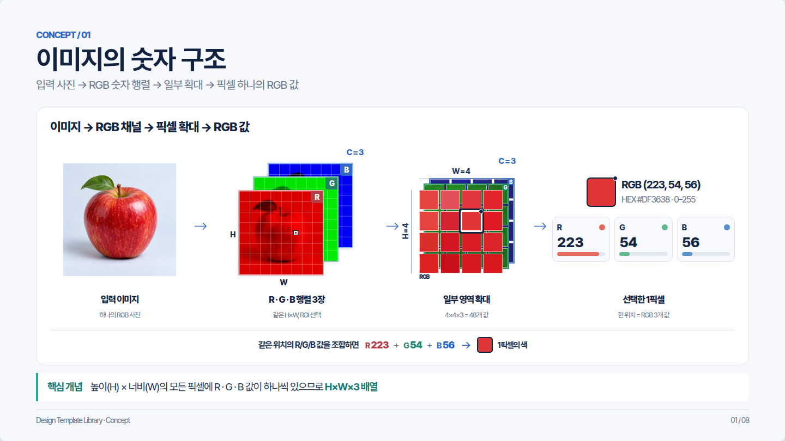
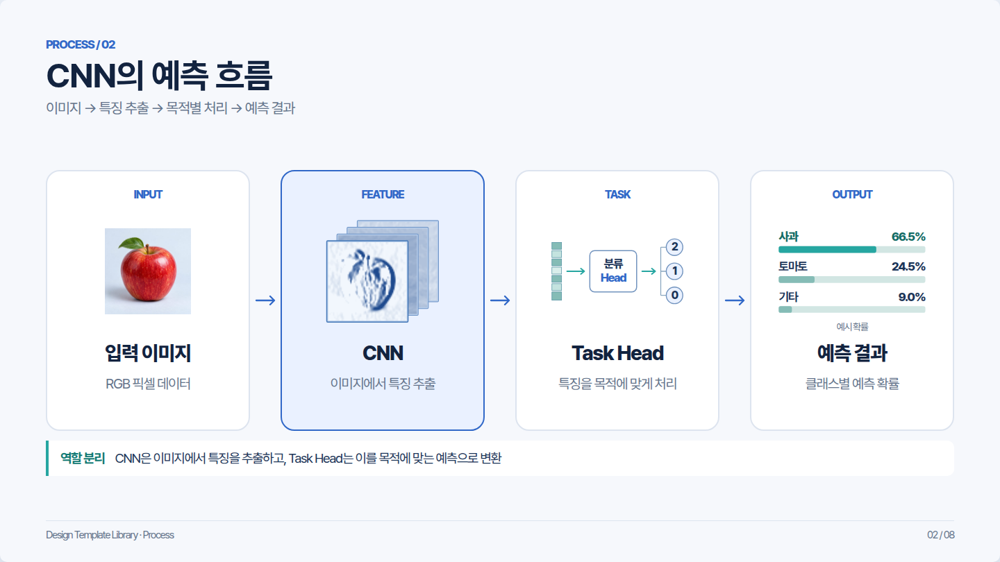
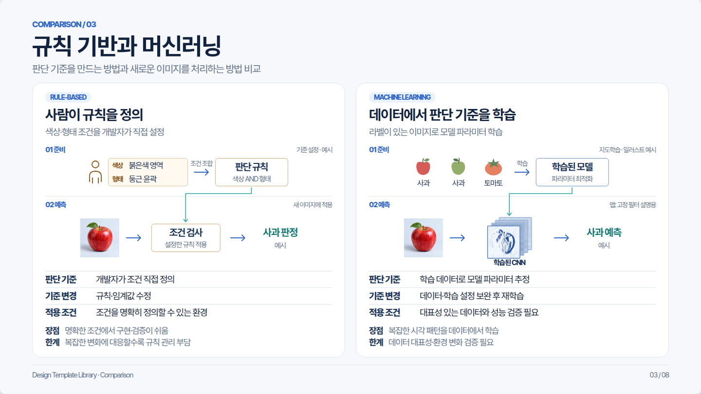
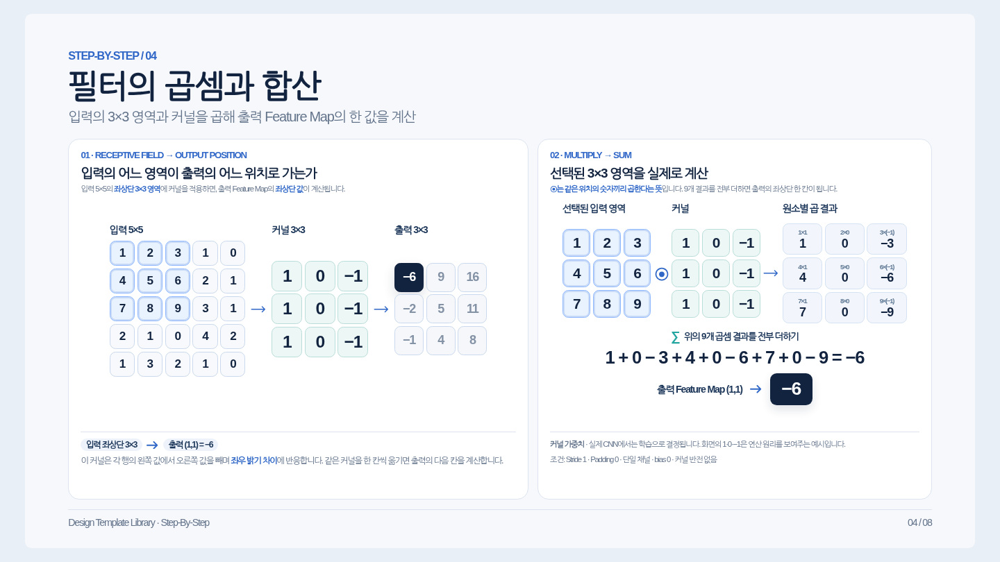
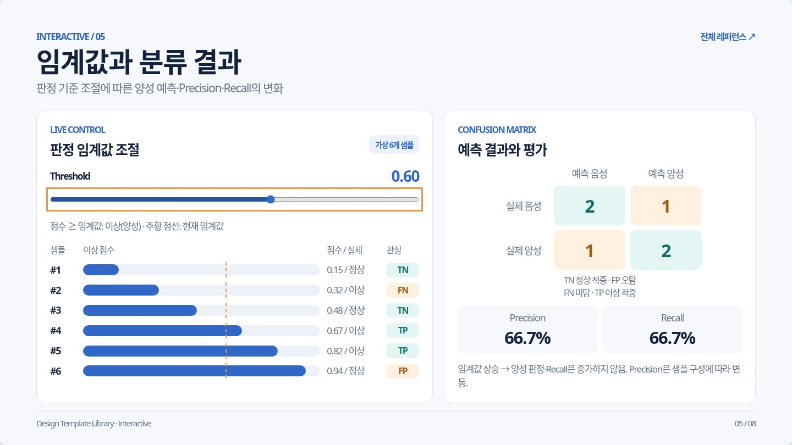
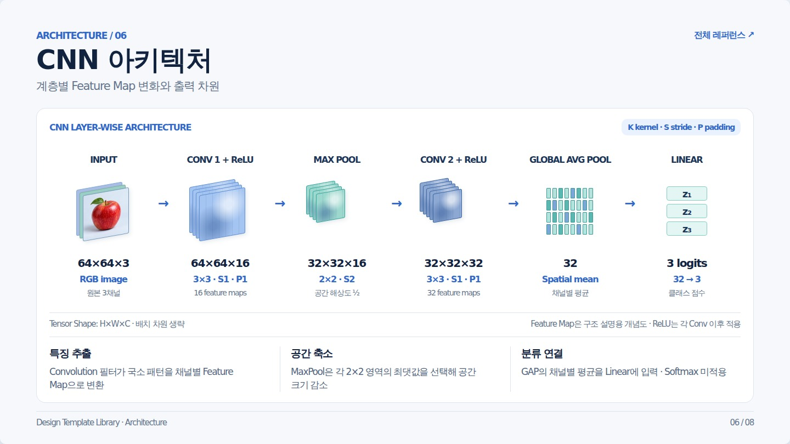
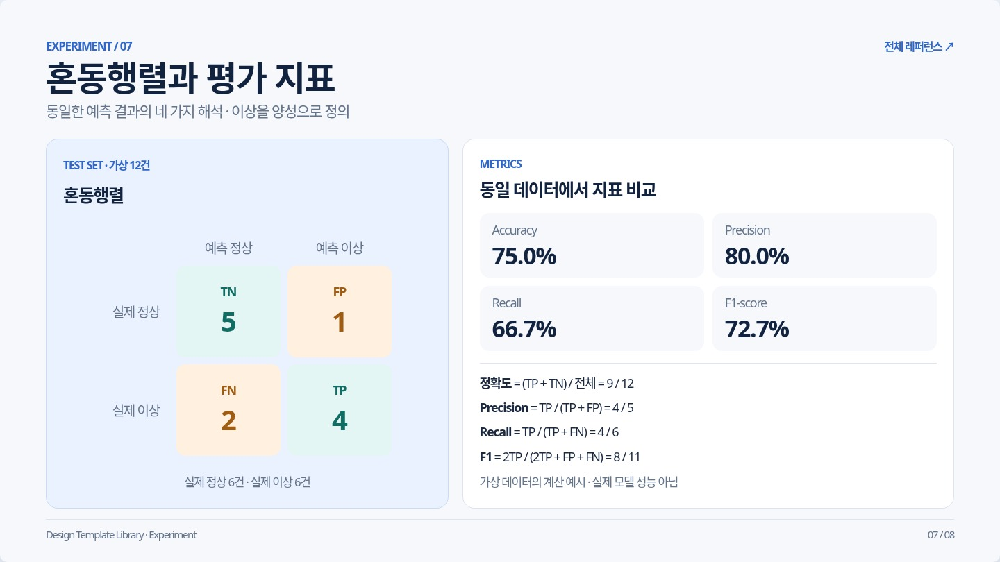
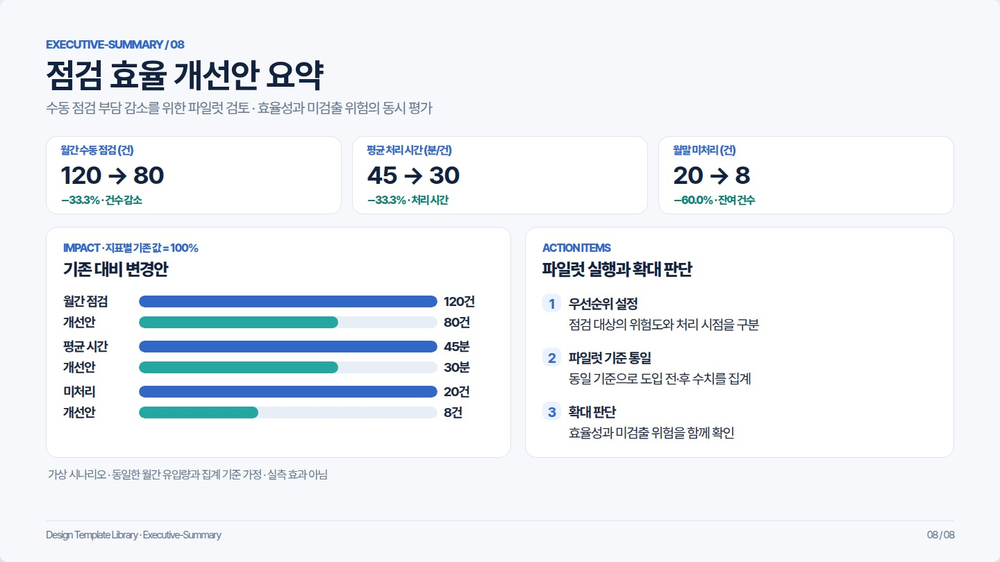
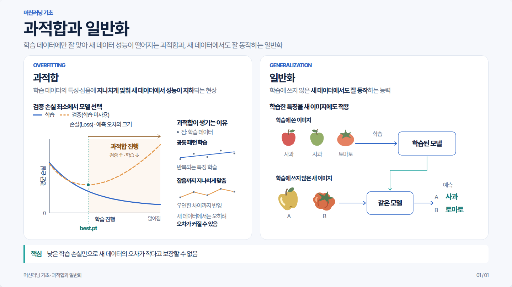

01Concept

Scroll · Slide · 원본 크기
02Process

Scroll · Slide · 원본 크기
03Comparison

Scroll · Slide · 원본 크기
04Step-by-Step

Scroll · Slide · 원본 크기
05Interactive

Scroll · Slide · 원본 크기
06Architecture

Scroll · Slide · 원본 크기
07Experiment

Scroll · Slide · 원본 크기
08Executive Summary

Scroll · Slide · 원본 크기
09과적합과 일반화

Scroll · Slide · 원본 크기